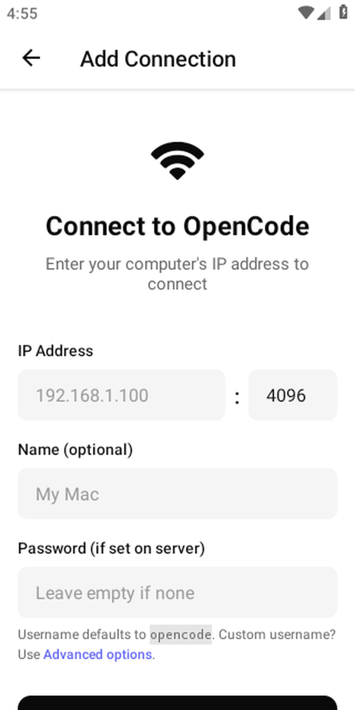
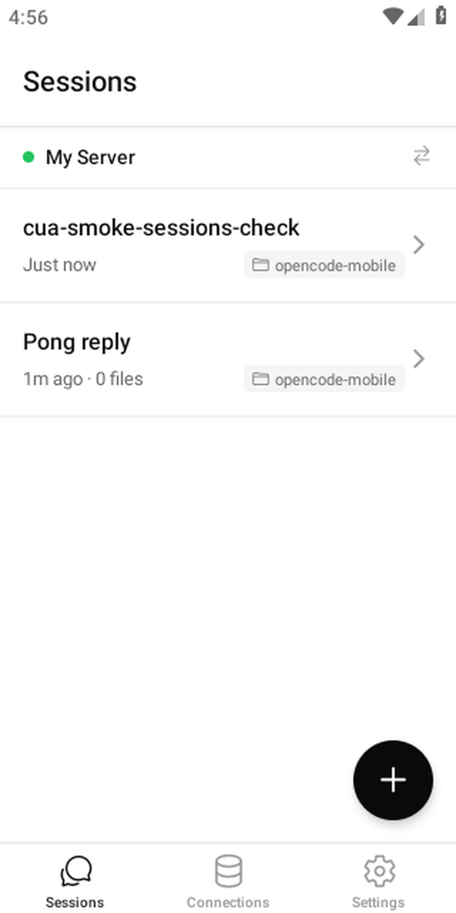
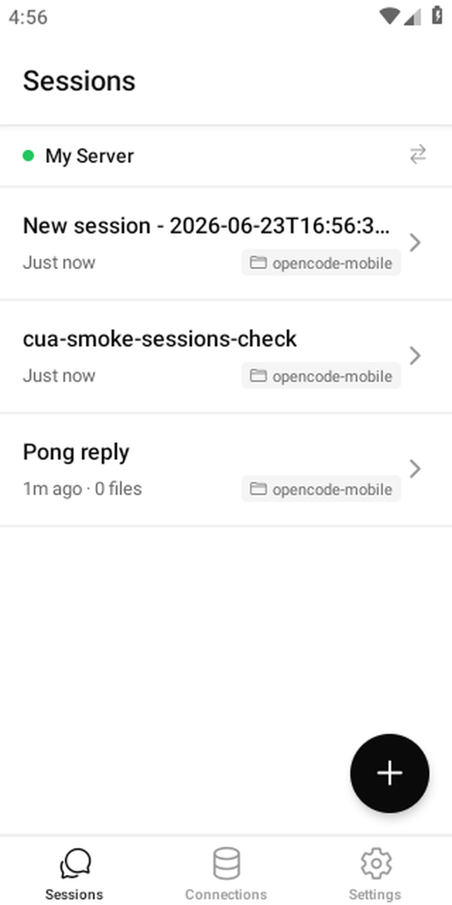
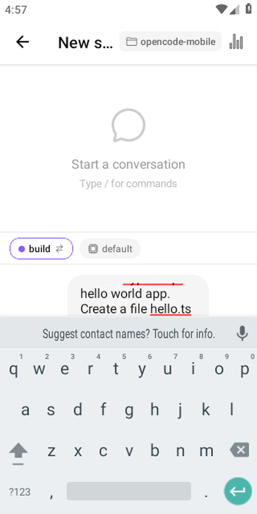
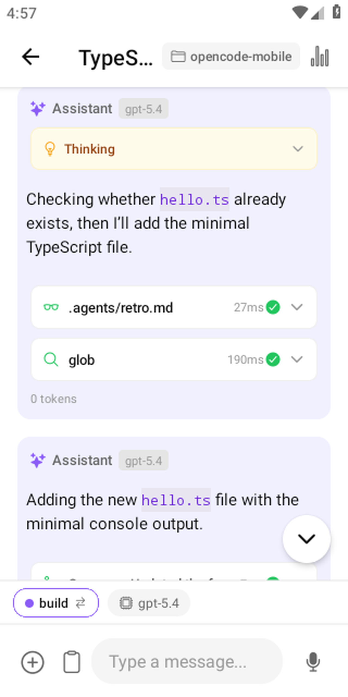
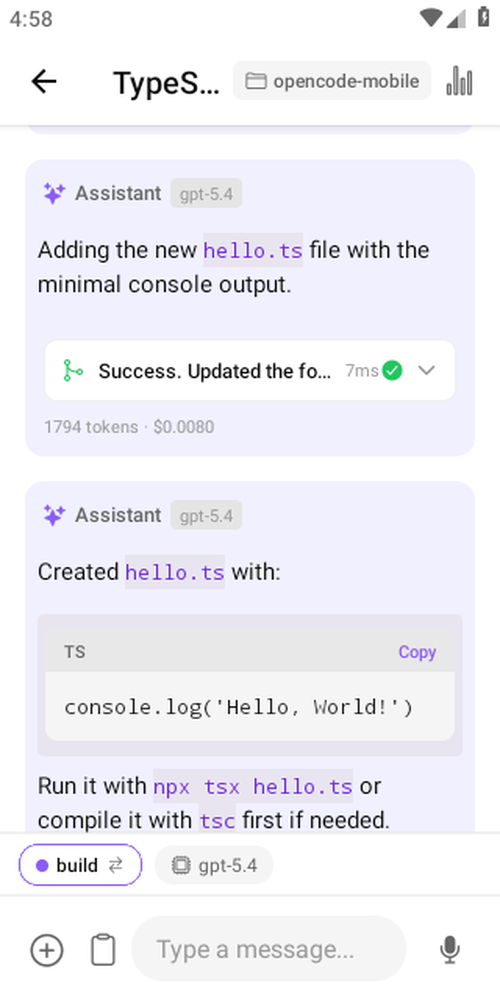
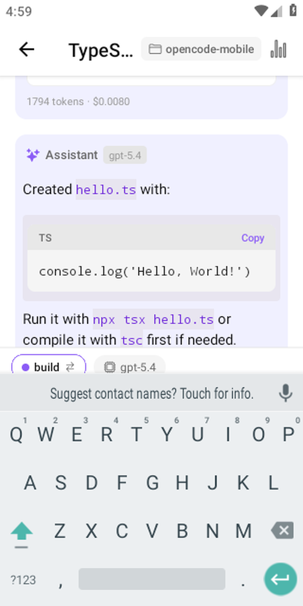

What is OpenCode Mobile?
OpenCode Mobile is a remote control for opencode. Start opencode serve --hostname 0.0.0.0 --port 4096 on your machine, point the app at it, and you're driving a full AI coding session from your phone. It speaks the opencode HTTP + SSE API directly — no middleman, no cloud relay.
The app has zero AI built in. All inference runs on your server with your own API keys. The recommended connectivity setup is Tailscale: install it on both your laptop and phone and your laptop gets a stable private hostname that works from anywhere, no port forwarding required. You can also use WireGuard, Cloudflare Tunnel, ngrok, or plain LAN. It is free and open-source (MIT) — no account, no ads, no telemetry unless you opt in.
See it in action
Connect to your server, start a session, watch the agent work — all from your phone.
10× speed — full session from connect to AI reply







Key features
- Multi-connection managementManage multiple OpenCode servers — local network, Cloudflare Tunnel, ngrok, or Tailscale.
- Streaming chatToken-by-token streaming responses directly from your OpenCode server.
- Diff viewerInline side-by-side diffs of every file change the agent makes.
- Tool call approvalReview and approve or reject tool calls before the agent executes them.
- Biometric unlockFace ID, Touch ID, or Android fingerprint protects the app and individual message sends.
- Secure credential storageServer credentials stored in the Android Keystore via expo-secure-store.
- Session managementBrowse, create, and resume coding sessions on your server.
Full feature list and use cases →
New here? See how to use OpenCode on your phone. Comparing options? Read OpenCode Mobile vs. ChatGPT & Copilot, OpenCode Mobile vs. Termux, or how to run Claude Code on Android.
How to install
Option A — F-Droid (recommended)
Add this repository in any F-Droid client (F-Droid, Droid-ify, Neo Store), then install OpenCode Mobile and get automatic updates:
https://dzianisv.github.io/opencode-mobile/fdroid/repoIn F-Droid: Settings → Repositories → add the URL above (or scan the QR code in the client's "Add repository" screen), then search for "OpenCode Mobile". Your client will ask you to confirm the repo on first connect.

Scan to add the F-Droid repo
Option B — Direct APK
Download the latest signed APK and install it (you may need to allow installation from unknown sources):

Scan to download the APK on your phone
Requirements
You need your own OpenCode server. OpenCode Mobile is a client, not a hosted service. Before it is useful you must run an OpenCode server somewhere you control and make it reachable from your phone.
- Install and run OpenCode on your machine:
npm install -g opencode-ai OPENCODE_SERVER_PASSWORD=yourpassword opencode serve --hostname 0.0.0.0 --port 4096 - Make it reachable from your phone — the simplest secure option is Tailscale (connect to your machine's Tailscale IP, e.g.
http://100.x.x.x:4096). A Cloudflare Tunnel, ngrok, or the same local network also work. - In the app, tap Add Connection, enter your server URL and password, and connect.
You bring your own AI provider keys (OpenAI, Anthropic, Gemini, etc.) on the server — your keys, your bill.
New to this? Follow the full step-by-step setup guide.
Frequently asked questions
Is it free?
Yes. OpenCode Mobile is completely free and open source under the MIT license. There is no feature gate, no ads, and no analytics you did not opt into.
Do I need my own server?
Yes — it's a client, not a hosted service. You run an OpenCode server yourself with opencode serve on a machine you control (laptop, desktop, or VPS), and the app connects to it over the network.
Is it on Google Play?
Not publicly yet — Google Play is in internal testing only. You can install it on Android today via our F-Droid repo or the direct signed APK.
Is there an iOS app?
Not for download yet. The iPhone and iPad build is in active development, including native build CI and TestFlight automation. Follow the iOS / iPhone progress page.
Where do my API keys live?
On your own OpenCode server. You bring your own AI provider keys (OpenAI, Anthropic, Gemini, etc.) and configure them on the server — your keys, your bill. The app never touches them and never proxies your code or conversations through anyone else's servers.
How do I install it?
Add the F-Droid repo https://dzianisv.github.io/opencode-mobile/fdroid/repo in any F-Droid client and install OpenCode Mobile, or download the latest signed APK from GitHub Releases. See the setup guide for the full walkthrough.